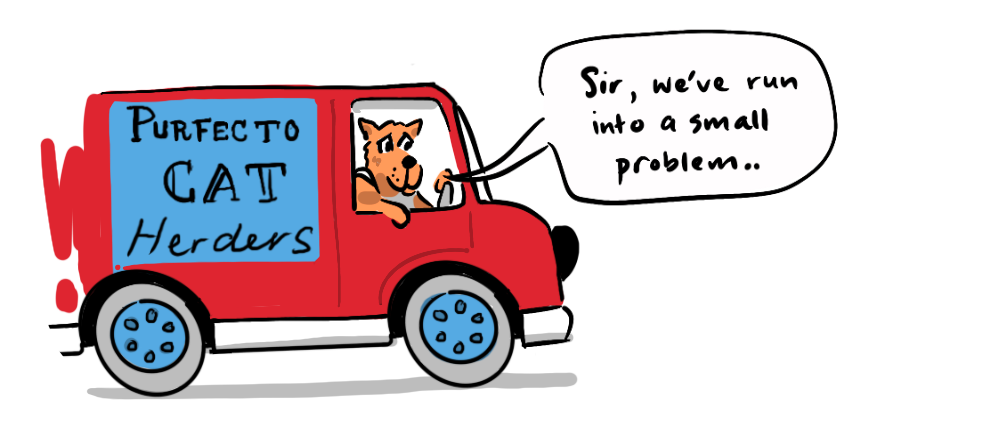

~ self-help principles work for individuals not populations ~
I have a confession: As a teenager I was desperate to learn how to win friends and influence people, to think and grow rich and develop the habits of highly effective people (seven to be precise)—I am James and I am a self-help-oholic.
These tomes held for me the promise of fame and fortune (though they would earnestly profess otherwise) but most importantly they offered a salve for my crippling shyness.
PERSONAL RESPONSIBILITY
While I am, today, 20 years self-help-sober, the genre is as popular as ever—with its imperative to stand up straight with your shoulders back (Jordan Peterson), to take extreme ownership (Jocko Willink) and exercise, subtly, the art of not giving a f*ck (Mark Manson).
Though not all the messages are as hyper-masculine as these, they all encourage the seemingly uncontroversial virtue of 'personal responsibility'. I will argue that, regarding 'personal responsibility', we should employ a positive double standard.
WHAT IS A POSITIVE DOUBLE STANDARD?
It is easy to hold a double standard where we expect others to take personal responsibility, while excusing our own shortfalls.
A positive double standard requires the opposite—that I take personal responsibility while not expecting the same of society. This position holds that we have the power to change our own individual futures, but recognises the statistical realities of social dynamics on populations.
FACTS
The power of 'personal responsibility' to positively impact one's own life has some scientific support. Studies on locus of control, developed by Julian B. Rotter in 1954, found that subjects who believed they could influence life's outcomes through action tended to attain better job satisfaction, more successful careers, and better stress management.
Albert Bandura's research in the 70s and 80s found that individuals who believed in their ability to influence events affecting their lives were more likely to set challenging goals and persist longer in the face of obstacles and achieve success. Personal responsibility also underpins much of the well-established field of Cognitive Behavioural Therapy as well as Carol Dweck's growth mindset.
A PHILOSOPHICAL PERSPECTIVE
The imperative to take personal responsibility sits on the free-will end of the determinism spectrum, setting the locus of control within us. Whether it is true or not that we are free to determine our own futures, the science suggests it is productive to believe that we can.
"Meanings are not determined by situations, but we determine ourselves by the meanings we give to situations." - Alfred Adler
WHO IS ALFRED ADLER?
Famous for coining the term "inferiority complex", Alfred Adler was initially a collaborator with Freud and a co-founder of the Vienna Psychoanalytic Society, though he diverged from the group in 1911—his focus on the individual's capacity to make conscious choices about their future was at odds with the Freudian emphasis on unconscious drivers determined by the past.
Adlerian philosophy has been a core influence underlying the self-help genre, from Steven Covey (7 Habits of Highly Effective People) to Brene Brown (Dare to Lead). Adler's philosophy provides both a cause and a solution to the problem at the heart of self-help.
THE PROBLEM
We have explored the benefits of taking personal responsibility on an individual basis. The problem comes when the philosophy is applied to society at large. Society is not simply a collection of individuals, it is an emergent phenomenon—a feedback loop between the collective and the individuals that comprise it. This means that statistical predictions can be made about the behaviour of a population based on social norms, pressures or inequities, and no amount of individual will can significantly influence these macroscopic forces.
In this way societies are like...
... QUANTUM SYSTEMS
At the subatomic level, quantum particles, such as electrons, exhibit behaviors that are fundamentally unpredictable. They exist in a superposition—occupying multiple potential positions simultaneously. However, when electrons interact en masse, their collective behaviour becomes entirely predictable—order out of chaos.
A FREE AGENT IN A PREDICTABLE SYSTEM
So, does this mean that we don't have any personal control or responsibility?
Not necessarily, it merely means we can't expect everyone else to have just read the same self-help book we've just read, and to have come to the same conclusions we have, and to be implementing those new behaviours flawlessly in the same way we are...
Self-improvement requires a lot of factors to align; you need to realise you have an issue, you need to be motivated, you need to have time to research and devise new behaviours, you need freedom from obligations that stand in the way and even with all those factors aligned, it's just hard to change.
It's much easier to expect others to change.
This is the crux of the problem. An individual philosophy of 'personal responsibility' can quickly transform into a political philosophy of 'personal responsibility'—one that discounts systemic inequities and puts the blame for the fortune of entire demographics on the individuals within them.
POLITICAL PERSONAL RESPONSIBILITY
Politicians who enlist 'personal responsibility' as a talking point, do so under an assumption that we live in a meritocracy, or even if they concede that "life is unfair" there's an intended implication that life is somehow equally unfair...
This brand of politics holds that society doesn't owe us anything, but fails to appreciate that part of not expecting anything from society means not expecting that every person can always be the best version of themselves, even if you might personally be going through a period of self-improvement. And given that self-improvement on an individual level is so difficult, expecting change from entire populations without social reform is... naive, especially given the data.
SOCIAL MOBILITY
In the US the correlation between a parent's income and their children's future income is around 50%. Were we to live in a meritocracy, where effort was the only factor in success, children born into the bottom 20% of incomes, would have the same chance of being there in their adulthood as anyone else—20%. However, Pew Research showed in 2012 that the children of income earners in the bottom 20% have a 43% chance of remaining there. The same is true of the top 20%, who have a 40% chance of staying there. The results are magnified when race is taken into account.
These macroscopic factors are a product, not of individual choices but of policy. Inequality cannot be addressed by demanding 'personal responsibility' for every individual member in a population. That's not how statistics work, it's not even how 'personal responsibility' works.

THE SOLUTION
A key element of Adler's philosophy is his concept—encapsulated in typical German philosophic style with the compound word "Gemeinschaftsgefühl" or "Community Feeling". Adler believed that genuine well-being could not be achieved without developing a sense of solidarity and connectedness with the world and everyone in it.
His position was that we can determine our future through our choices, but we must also contribute to the 'community feeling' we want.
"The important thing is to develop the courage to move forward, to dare, to stop being anxious, to look ahead with joy and see one's fellow human beings in a friendly light." - Alfred Adler
SO...
Change is hard, and the efforts others make to change are often invisible to us. To make the most of our own opportunities while making sense of and contributing to society, it is important to employ a positive double standard.
A positive double standard holds that we can change our own individual futures, but we can't expect others, particularly whole groups, to do the same without addressing wider societal forces. This is not to say that taking this view makes someone superior, it merely seeks to recognise the social dynamics at play for all of us. I believe this is a realistic outlook, and find it helps me personally to understand my own journey and issues in society a little better—seeing my fellow human beings in a more friendly light.